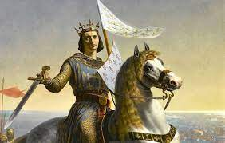
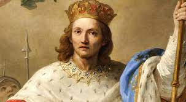
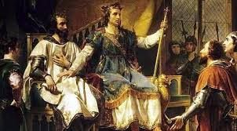

Nós celebramos, neste dia, a vida do santo que foi rei da França, Luís IX. Ele nasceu em Poissy, a 25 de abril de 1214, e teve a graça de ter uma mãe muito religiosa, tanto assim que o aconselhava depois do Batismo: “Filhinho, agora és um templo do Espírito Santo, conserva sempre teu coração puro e jamais o manches com o pecado”.
Nascimento do Monarca
Luís IX nasceu em 25 de abril de 1214, na cidade de Poissy, próxima de Paris. Era o quarto filho de Luís VIII, cognominado Leão, e de Branca de Castela.

Foi, sobretudo, desta virtuosa princesa que o santo rei recebeu os principais ensinamentos da nossa Religião: o amor a Deus e à Santíssima Virgem, o apreço pela virtude e a aversão ao mal. Quando ela tomou em seus braços o menino logo após seu Batismo, osculou-o no peito, dizendo: “Filhinho, que agora és um templo do Espírito Santo, conserva-o sempre imaculado e jamais o manches por um pecado”. Esta boa mãe não hesitava em repetir-lhe, com muita sinceridade, que preferia vê-lo morto a sabê-lo manchado por um pecado mortal.
Corriam serenamente os anos da educação de São Luís, quando em 8 de novembro de 1226, voltando de uma campanha vitoriosa contra os cátaros do sul da França, Luís VIII faleceu, aos 40 anos de idade. Além da grande dor pela perda do esposo e pai, esse acontecimento acarretava sérias consequências, pois o herdeiro do trono contava apenas 12 anos!
Entretanto, o rei havia manifestado aos nobres cavaleiros, reunidos em torno de seu leito mortuário, suas últimas recomendações: “Que Luís, meu filho, seja prontamente conduzido a Reims, para lá ser coroado. Que ele esteja sob os cuidados e a tutela de Branca, minha querida esposa, e que o Condestável Montmorency seja para ela um bom conselheiro”.4ª derradeira ordem de Luís VIII não tardou em ser cumprida: em 30 de novembro de 1226, São Luís foi coroado rei de França.
O governo da família e do reino de São Luís Rei
Branca de Castela assumiu a regência e enfrentou, com energia e sagacidade, as perigosas ameaças da Inglaterra, as orgulhosas pretensões da nobreza feudal e uma nova revolta dos hereges albigenses

Finalmente, em 1234, aos 20 anos de idade, São Luís assumiu o governo do Reino Cristianíssimo. Todavia, manteve a mãe a seu lado, numa posição de confiança e poder, continuando a mostrar-se filho obediente e respeitoso. Foi ela quem concertou o casamento do jovem rei com Margarida de Provença, celebrado em 27 de maio de 1234. Desta união nasceram-lhes 11 filhos, aos quais o próprio São Luís encarregava-se de dar cuidadosa e esmerada educação.
Instruía-os, sobretudo, à noite, depois de recitar as Completas. Fazia-os entrar em seu quarto e os motivava a uma vida virtuosa, contando-lhes histórias de santos, bons reis e imperadores, e recomendando-lhes haurir deles os exemplos de virtudes.
Ocupava-se de modo especial em transmitir aos filhos o hábito da oração, a assistência à Santa Missa, a recitação das Horas Litúrgicas e a devoção a Nossa Senhora; exortava-os a jamais se descuidar da vida espiritual e a desprezar os prazeres e as vaidades mundanas.
Esse mesmo espírito de Fé marcou o seu longo reinado, durante o qual a bênção de Deus acompanhou-o visivelmente. Proporcionou como ninguém o bem-estar público, a paz e a prosperidade. Apoiou as corporações de ofício e regulou os costumes, dando estrutura e estabilidade às organizações da plebe. Foi um alentador de todas as formas de autonomia, mas soube ao mesmo tempo ser o centro enérgico e vivo do reino.
Justiças sem demoras e sem burocracias
A rainha-mãe, Branca de Castela, providenciou ótimos professores e instrutores para uma formação digna do filho, dessa forma quando o pai de Luís morreu, quando este tinha apenas 12 anos, o jovem pôde ser coroado e, na idade de 21 anos, começar a reger toda a nação, sem esquecer sua realidade de pai e esposo. São Luís era penitente, humilde, homem de oração e caridade; participava com tanta perseverança da Santa Missa diária que, ao ser provocado por nobres, respondia: “Se eu dedicasse tempo dobrado para os jogos ou para a caça, ninguém repreenderia!”

São Luís buscava intensamente viver a justiça do Reino de Deus enquanto rei e cristão, por isso praticava o que aconselhava: “Não tiremos o bem dos outros nem sequer para o dar a Deus”. Cheio de amor a Cristo, à Igreja e ao Papa, São Luís organizou até mesmo cruzadas a fim de resgatar os lugares santos; certa vez, ficou preso durante 5 anos e depois de solto empenhou-se numa outra cruzada que o vitimou com uma peste mortífera (tifo). Ao receber os santos sacramentos, esse grande santo entrou no Céu a 25 de agosto de 1270.
Foi canonizado em 1297, pelo Papa Bonifácio VIII.
“Cavaleiro e religioso, patriarca e rei, seu maior título de glória é o de ter vivido sempre sob o olhar de Deus e a serviço da Divina Majestade”
É difícil não se maravilhar contemplando a diversidade de figuras formadas num caleidoscópio pela luz ao atravessar alguns pedaços de vidro colorido, por ela como que transformados em cristais e pedras preciosas. Ora, essa forma de beleza, ao mesmo tempo uma e multiforme, bem pode simbolizar a riqueza de certas almas bem-aventuradas, cujo peregrinar por esta Terra desvenda aspectos de espírito tão variegados quanto os policromos desenhos apresentados por esse singelo instrumento.
São Luís IX, rei e patrono de França, é uma dessas almas fecundas em santidade sob as mais variadas facetas. A vastidão de seus empreendimentos e a diversidade de aspectos da sua vida inspiraram um famoso escritor francês a afirmar que nele “não se sabe o que mais admirar, se os atos do cavaleiro, do religioso, do patriarca, do rei ou do homem”.
Ele pode ser considerado, antes de tudo, um homem que queria viver sob o olhar de Deus. Raramente se viu pessoa tão compenetrada de pertencer mais ao Céu que à Terra. Ao ponto de Joinville, seu fiel amigo e biógrafo, resumir assim a sua vida: “Este santo homem amou a Deus de todo o seu coração, e O tomou como modelo em suas obras”.
São Luís tornou-se célebre por seu proverbial espírito de justiça e equidade. Para coibir as transgressões e excessos dos juízes, oficiais e outros cargos públicos, nomeava juízes extraordinários a fim de examinar sua conduta e rever seus julgamentos. Premiava os que exerciam com honra e responsabilidade seus encargos. E aos que agiam mal, aplicava exemplar punição.
E, coisa espantosa para os homens dos nossos dias, ele mesmo julgava, sem demoras nem burocracias, os pleitos que eram levados ao seu conhecimento sob o famoso carvalho de Vincennes. Ouçamos a Joinville, em sua linguagem singela e franca, nos traçar um esboço dessas sessões: “Acontecia com frequência de, após a Missa, ele ir sentar-se no bosque de Vincennes, debaixo de um carvalho, e nos fazer sentar ao seu redor. E todos quantos tinham alguma questão a resolver vinham falar-lhe, sem empecilhos de guardas nem nada do gênero. Ele então lhes perguntava: ‘Alguém quer apresentar uma queixa?’. Levantavam-se logo os que tinham reclamações a fazer. Dizia-lhes ele: ‘Calai-vos todos, sereis atendidos um após o outro’. Em seguida, designava Monseigneur Perronde Fonteinnes e Monseigneur Geffroy de Villete e dizia a um deles: ‘Resolva-me este litígio’. E quando percebia alguma coisa a corrigir nas palavras daqueles que falavam em seu nome, ou em nome de alguma das partes, ele mesmo fazia a retificação”. Perronde Fonteinnes e Geffroy de Villete eram juristas de reconhecida competência.
São Luís vida privada de religioso
Detentor dos mais altos títulos de nobreza, esse rei de França preferia assinar simplesmente “Luís de Poissy”, pois nessa cidade recebera o Batismo. Ele considerava sua maior dignidade o ter sido batizado. Em meio a todas as suas obrigações de soberano, recitava todos os dias as Horas Litúrgicas e lia com assiduidade a Sagrada Escritura e os Padres da Igreja. Confessava-se com frequência e exigia, como penitência, que o confessor o açoitasse com um flagelo trazido por ele mesmo. Segundo alguns autores, levava sua devoção a este Sacramento a ponto de não permitir ao sacerdote chamá-lo de “majestade”, pois no Tribunal da Reconciliação ele não era rei, mas filho, e o Ministro de Deus não era súdito seu, mas pai.
Seu amor a Deus e aversão ao pecado tornavam-no capaz de suportar quaisquer males. Um dia perguntou a seu fiel amigo e conselheiro:
— Joinville, o que preferes: contrair a lepra ou cometer um pecado mortal?
— Prefiro cometer trinta pecados mortais a contrair a lepra!
— Falas como um insensato — contestou o rei —, pois não há lepra tão vil como a de estar em pecado mortal.
Seu amor ao próximo e sua solicitude para com os pobres eram reflexo do desvelo da Divina Providência. Conta-se que, numa abadia próxima a Paris, havia um monge no qual a lepra já devastara toda a face. O santo rei o visitava regularmente. Em certa ocasião, levou- lhe perdizes de sua cozinha para alimentá-lo melhor e ajudou-o a comer, colocando os pedaços de carne em sua boca.
Um vencido admirado pelo vencedor
A esta alma tão cheia de fé e convicta de sua filiação divina, era-lhe impossível não viver unida de modo radical à Cruz de Cristo.
Assim, em agosto de 1248, partiu do porto de Aigues Mortes, ao som do Veni Creator Spiritus. Estando a seu comando a VII Cruzada, em junho do ano seguinte, conquistou a cidade de Damieta, no Egito.
Após nove meses de penosas marchas, o exército cristão chegou a Mansurá em fevereiro de 1250. Um imprudente ataque a essa cidade, comandado pelo irmão do rei, Roberto de Artois, acarretou consequências desastrosas. Seguiu-se uma série de batalhas nas quais São Luís se distinguia por sua coragem, e os adversários eram repelidos. Em breve tempo, porém, os francos tiveram de enfrentar dois terríveis inimigos: primeiro a fome, depois a peste provocada pelo apodrecimento de grande quantidade de cadáveres. O próprio rei foi atingido pela enfermidade e feito prisioneiro em abril de 1250.
Durante pouco mais de um mês de cativeiro sob o domínio do sultão do Cairo, a todos causava admiração por sua coragem, piedade e grandeza de alma. Depois do pagamento de um vultoso resgate e da entrega da cidade de damieta, o santo rei e os demais cruzados foram libertados e embarcaram para São João de Acre. São Luís permaneceu no Oriente por mais quatro anos, que aproveitou para estabelecer vantajosas alianças e fortalecer as cidades cristãs da Síria.
Morte da mãe e partida para Túnis
Na primavera de 1252, chegou-lhe a notícia do falecimento de sua mãe, Regente do Reino. Após derramar uma torrente de lágrimas, rezou, ajoelhado diante de um altar: “Dou-vos graças, ó meu Deus, por me terdes dado tão boa mãe. […] Vós sabeis que eu a amava acima de todas as criaturas, mas como é preciso, antes de tudo, que se cumpram os vossos decretos, que vosso nome seja bendito nos séculos dos séculos”. A morte de Blanca de Castela impôs ao rei a obrigação de voltar à França, onde ele desembarcou em abril de 1254. Os anos subsequentes foram empregados na administração e organização do reino. Em 1258 consegue que Henrique III, da Inglaterra, assine um acordo de paz com o reino de França. Em julho de 1270, partiu para Túnis, na África. Enumeram-se várias razões para a escolha dessa cidade como primeiro objetivo da nova Cruzada. Todavia, para São Luís, a principal causa era sua esperança de converter à Fé Cristã o sultão daquelas terras.
São Luís Rei entrega sua alma à Deus
Após tomar facilmente a cidade de Cartago, o rei decidiu aguardar a chegada de Carlos d’Anjou com suas tropas. Mas logo a situação tornou-se insustentável para os cruzados. Reduzidos à inação sob o escaldante calor africano, com escassez de água potável e em precárias condições de higiene. Não tardou a alastrar-se uma epidemia que ceifou o exército.
Coma saúde já muito debilitada, o rei foi um dos primeiros a ser prostrado pelo terrível mal. Durante um mês de sobrevida, empregou os últimos esforços para instruir seus filhos, em especial Filipe, o herdeiro. Nos últimos dias, quase não conseguia falar. Na véspera de sua morte, pediu a Sagrada Comunhão; em seguida, quis ser colocado no chão, sobre cinzas e com os braços em cruz, e ouviram-no murmurar: “Senhor! Entrarei em vossa casa e vos adorarei no vosso santo tabernáculo”. Ditas estas palavras, cerrou os olhos e “rendeu ao Criador o seu espírito, na mesma hora que o Filho de Deus morreu na Cruz para a salvação do mundo”. Era o dia 25 de agosto de 1270.
Assim passou desta vida para a eternidade aquele que, vivendo sempre sob o olhar de Deus, dedicou toda a sua existência ao serviço e louvor da Divina Majestade.